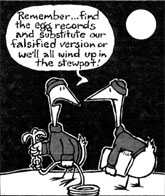

This is the second year of our "great experiment" . . . living on a farm of our own that my husband and I carved out of an undeveloped piece of land. And, looking back over the past months, I'm amazed at how far we've come toward achieving our dreamed-of self-reliant lifestyle. For example, we now light and warm our home with site-generated wind and solar power, and grow most of our food, as well.
When we first moved to this five-acre plot in Arizona, however, the farm-to-be was nothing but a hilly pasture. There were no trees for lumber or fuel, no well or other source of water, and certainly no telephone or electricity. And because our land was smack in the middle of cattle country, our only neighbors were curious cows. (They paid us their respects during our second night of homesteading . . . we awoke the following morning to find large, wet noses pressed against the frosty windows of our Volkswagen van.)
As you can well imagine, those first few months on our homestead were hectic. We hired a well-driller, labored to install the pump and waterlines, hauled all of our accumulated belongings from town, quickly cobbled together a shed to store them in, and then embarked on the downright intimidating task of building a house. Although we'd scoured the libraries and read dozens of books on alternative construction methods and the like, we soon discovered that there's a world of difference between the reading, the planning . . . and the actual doing.
Despite our sometimes stumbling start, however, the house did get built, and since then we've learned enough to help us tackle just about any homestead problem with confidence (if not with ease and grace). And among the most important lessons we've mastered over the past two years is one that definitely contributes to our ability to be selfreliant: good record-keeping. We now consider it to be an essential aspect of our operation . . . and perhaps our experiences will be of help to other folks who are trying to make sense of their work, and lives, "down on the farm".
During that first year, of course, we were so disorganized that it was hard for either of us to conceive of adding record-keeping to the many jobs we were already struggling with. If we'd started our journal right away, though, we'd have had the information we needed when it came time to expand upon our plans. And now that we do keep records, we've found that they serve another purpose, too: They're often a source of encouragement in the sometimes gray days that are a part of embarking on a new life in the country.
At any rate, this past year my husband and I finally put together an eight-section logbook and began to get organized. We found that an inexpensive loose-leaf binder makes a practical ledger because it can be rearranged, added to, or subtracted from as our information-saving needs change. Subject dividers with slip-in labels keep the sections in order . . . and lined sheets, or graph paper for charts and plans, fit in place easily.
We feel that our most important records are those dealing with the weather. . . so that's the first subject in the log. We note the high and low temperatures for each day (the information should be helpful for determining actual homestead frost dates and planting times) . . . the seasonal changes in the wind conditions (which we need to keep track of, since our wind generator provides all our electricity) . . . and any precipitation or cloud cover, or the absence of either (knowledge that'll be useful in designing future solar heating systems).
We plan someday to acquire an anemometer for determining the wind rate and direction, a rain gauge for recording the amount of precipitation, and a high-low thermometer for obtaining more accurate readings of the temperature flux. The possibility of having our own weather station excites us both!
Our financial data have been assigned the second place in the log. We simply note the money we take in each day (usually a rather neat column, since it has so few entries) and the family's cash outflow. We don't account for every single penny (we leave out 5 cents parking fees, for example), but we do find that it helps to keep fairly accurate notes about where the money is going.
We've also learned that it's best to write down daily expenses as they occur, and then to organize the figures into a few pertinent categories (groceries, livestock feed, gasoline and oil, etc.) at the end of the month. Another useful trick is to stuff all our receipts in a calendar with pockets, and then tear off the month and store it away. Later - if a question arises about income or outgo - the proof is in the pouch!
The produce category follows the financial section. Here, we record everything that we "grow" on our property. This task involves weighing the goods as they're laid, made, milked, picked, or slaughtered (meat animals are, of course, first skinned and cleaned). These figures help us determine what our homegrown food costs (and saves) us, and they provide a little boost to our spirits at the end of the month when we see just how much we've produced. By referring to these records, we're also able to plan for future growing seasons. (They can show us, for example, which vegetables we need to sow more - or perhaps less - of.)
After the produce section, our progress notes begin. Here we chronicle any major projects (those outside of our ordinary chores) that we tackle. We include such accomplishments as building chicken coops, working on the house, making car repairs . . . and even washing the dishes. (I'm a rather casual housekeeper, so that last chore does qualify as a special event!) If we spend the day in Tucson (the nearest large city), we log in the trip as an "errand day".
Later, if we need to know how much time it took us to finish a particular job, or even just how long the cement in an outbuilding has been drying, we've got the answers right in front of us. The calendar of "specials" also serves as a mood lifter it helps to thumb back now and then and realize how much we've actually managed to do.
The animal category comes next. We note the days when the quails lay eggs, what we see when we open the beehives (and any work we do with them), the dates on which we notice an animal is sick, times of insect emergence . . . in short, all of our observations having to do with nonhuman animal life - tame or wild - around the farm. At the end of the year, we classify the information by species and get a good idea of how productive each critter has been.
The animal chapter is followed by the vegetable section. There we write down the planting dates (along with the types of seed used), sprouting dates, harvest times, pest problems, and chores done (such as digging, cultivating, or applying fertilizer) . . . and also include a diagram of our garden layout for each season. These maps and records are useful in planning crop rotation, and also help call to mind just what was planted in the third southwest bed that didn't germinate after all!
The next to last division of our book is for projects. On these pages, we enter any jobs that still need to be done but aren't of immediate concern. (If the door falls off the barn and the goats are getting out, we don't write that repair in the project section!) This list of reminders is always fairly crowded, because there seems to be no end to the fix-up jobs we ought to do but put off for a "rainy day". (It is satisfying to cross them off as we get to them, however.)
Finally, there's the ever-popular miscellaneous section. It contains some of our favorite recipes, records of special events (when visitors come to the ranch, for example), and other unexpected happenings that just don't fit anywhere else. It's a catchall . . . but if we notice that we're getting a lot of entries about one particular subject, we'll simply give that topic its very own section in next year's book.
The uses of our log expand all the time. We're pleased with the amount we're learning from it, as well as the money we're saving by reviewing our records regularly. The days no longer slip away unnoticed into the past . . . instead, they're preserved in our loose-leaf memory bank, allowing us to recall the important details of the continuing story of our lives on this place in the sun.
|
 |
|
|